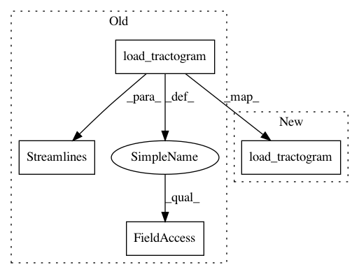

9e81ccdfd9da879cccc552c3e80cfd7a28a85eb1,doc/examples/segment_quickbundles.py,,,#,25
Before Change
Load fornix streamlines.
fornix = load_tractogram(fname, "same",
bbox_valid_check=False).streamlines
streamlines = Streamlines(fornix)
Perform QuickBundles clustering using the MDF metric and a 10mm distance
threshold. Keep in mind that since the MDF metric requires streamlines to have
After Change
Load fornix streamlines.
fornix = load_tractogram(fname, "same", bbox_valid_check=False)
streamlines = fornix.streamlines
Perform QuickBundles clustering using the MDF metric and a 10mm distance
In pattern: SUPERPATTERN
Frequency: 3
Non-data size: 4
Instances
Project Name: nipy/dipy
Commit Name: 9e81ccdfd9da879cccc552c3e80cfd7a28a85eb1
Time: 2019-08-01
Author: skab12@gmail.com
File Name: doc/examples/segment_quickbundles.py
Class Name:
Method Name:
Project Name: nipy/dipy
Commit Name: 9e81ccdfd9da879cccc552c3e80cfd7a28a85eb1
Time: 2019-08-01
Author: skab12@gmail.com
File Name: doc/examples/segment_clustering_metrics.py
Class Name:
Method Name: get_streamlines
Project Name: nipy/dipy
Commit Name: 9e81ccdfd9da879cccc552c3e80cfd7a28a85eb1
Time: 2019-08-01
Author: skab12@gmail.com
File Name: doc/examples/segment_extending_clustering_framework.py
Class Name:
Method Name: